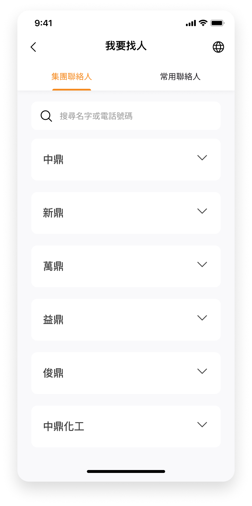

myCTCI APP
中鼎集團
TEAM
由專案經理、工程經理、9名開發人員和1名設計師組成。
TIMELINE
September 2022 - Ongoing
Project Scope
首頁
行動簽核
我要找人
myCTCI App 是一款專為員工內部管理設計的應用程式，功能涵蓋出差與請假申請管理、請假單/出差單/加班申請單的行動簽核，以及員工名錄查詢、資本資訊檢索、直接通話或安排會議等功能。透過這些功能，myCTCI App 能夠有效提升企業管理效率，並打造高效能的個人工作環境，同時減少溝通成本。
在初版設計完成後，我發現仍有許多優化與改進的空間，因此展開了此次的重新設計Redesign計畫。
Design Goals ⤵
直覺化的操作指引
簡單直觀的操作流程，減少資訊負擔，讓使用者能輕鬆上手。
簡約的視覺風格
在美感方面，透過柔和色調搭配企業識別色，強化重點資訊的呈現效果。
精準的資訊呈現
整合功能與頁面，聚焦關鍵內容，清晰劃分資訊層級，提升資訊的易讀性與明確性。
Wireframes ⤵
提供一個概要結構，清晰描繪 App 的佈局與架構，作為設計與開發的視覺參考指引。

Design System ⤵
依據企業品牌識別規範，選用黃色與灰色作為主色調。
設計方向延續功能性與易用性的核心理念，在美感方面以柔和色調結合企業識別色，強化重點資訊的呈現。整體定位為高效、簡潔且一致。

Overview ⤵


一鍵簽核與批量審核，工作效率全面提升
行動簽核讓審批變得快速又簡單，只需一鍵即可完成所有流程，輕鬆縮短繁瑣步驟，並有效降低錯誤率。支援同意、拒絕、加簽、轉派等多種操作，讓審批流程更加高效靈活。系統自動分類未處理項目，並根據申請時間清晰排序，幫助快速定位關鍵文件，提升行政作業效率！


隨時隨地語音聯繫，降低成本提升效率
透過手機或即可撥打語音電話，輕鬆降低通訊成本。實現團隊間即時互動，快速討論關鍵細節，讓協作更高效。當需要夥伴支援時，提供提醒與確認功能，確保溝通流程順暢無阻。


集團通訊錄，找人聯繫更快速！
透過通訊錄加入常用聯絡人，輕鬆聯繫無需反覆搜尋，讓溝通與協作更加順暢。支援語音通話與視訊會議，並可直接點擊撥打或發送郵件，讓聯繫更快速、更便利。
更多設計細節！
透過通訊錄輕鬆加入常用聯絡人，無需反覆搜尋，讓溝通與協作更加順暢。該應用支援語音通話與視訊會議，使用者可直接點擊撥打電話或發送郵件，實現更快速、更便利的聯繫。



語音及視訊連繫，好方便

即時查詢全球據點